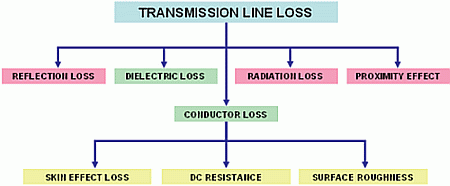
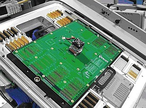
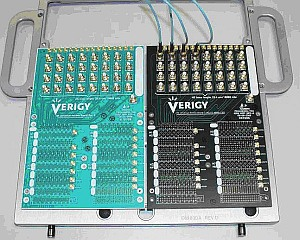
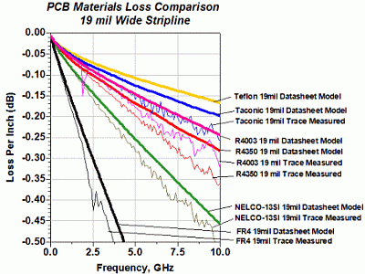
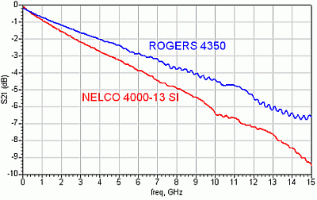
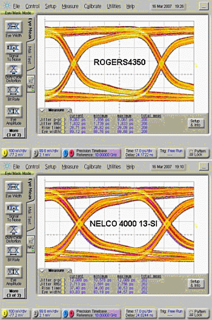

Choosing the Dielectric Material for a V93000 DUT Loadboard
Jose Moreira, Verigy
Heidi Barnes, Verigy
Paper ID 109988
Abstract
This application note discusses the influence of the dielectric material choice on the performance of DUT loadboards for high-speed digital applications. The objective is to show that changing from a low loss material to an even lower loss material provides little performance increase due to the fact that typical V93000 DUT loadboards have long trace lengths where the skin effect loss dominates the DUT board signal trace loss.
Introduction
The loss of the DUT board signal traces will have a direct impact on a digital signal due to the additional deterministic jitter generated in the form of inter-symbol interference. Figure 1 shows a diagram describing the typical loss components on a DUT Loadboard. In this application note we will only concentrate on the dielectric loss component. It is important to understand that the skin effect loss is also important and in most cases will be the dominant factor; but in this note we will try to address some of the concerns when choosing a dielectric material for a high-speed digital application, especially when deciding if spending additional money on the best available dielectric material really provides an additional performance gain. For this we will compare two low loss dielectric materials with a typical V93000 evaluation DUT loadboard.

Figure 1. Typical Components for the Loss on a DUT Loadboard
Dielectric Materials
There are ever increasing challenges when developing DUT loadboards for high-speed applications using automated test equipment (ATE). This is due to the many variables and considerations that must go into developing characterization test fixtures for I/O cells for high-speed digital applications [1,2,3]. One of the variables that needs to be controlled is the correct choice of dielectric material. Although there is a significant amount of work on dielectric loss for microwave applications, high-speed digital applications have different requirements given the broad frequency bandwidth of digital data patterns, as well as the high density of the I/O interconnects. Modern integrated circuits might have hundreds of differential high speed I/O cells requiring complex multilayer printed circuit boards (PCB) composed of different dielectric materials to be utilized for the DUT loadboards.
There is already a significant amount of work from the industry in evaluating dielectric materials for PCB manufacturing [4,5,6]. In this application note we will show that if appropriate care is taken on minimizing the other PCB loss factors like resistive loss and skin effect loss [2], the dielectric loss for applications in the 2.5 Gbps to 10 Gbps range can be at an acceptable level even when not using the lowest loss dielectric material in the market.
Multi-layer test fixtures with layer counts typically above 20 are required for addressing current high-speed digital ICs. This restricts the choice of suitable dielectric materials, since manufacturing difficulty and yield become key factors. The highest performance low loss dielectric materials like Teflon do not laminate well for creating multiple stripline routing layers and cannot be used effectively in these high density multi-gigabit test fixtures. The large size of an ATE test fixture can require high speed signal routing on the order of 25 to 50 cm (10 to 20 inches) (see Figure 2) which drives the need for dielectric materials that can maintain a uniform layer thickness and material properties over large distances even after going through the PCB fabrication process.

Figure 2. DUT board Docked to an ATE System for a 5Gbps Application
There is a large selection of suitable dielectric materials that can be used for PCB design [4]. Dielectric materials can be roughly divided into two large families. The first family is composed of a fiberglass mesh filled with a resin and is also known as woven glass reinforced materials such as the common FR4 material. The second family does not utilize a glass mesh and is called non-woven glass reinforced such as Gore's Teflon-based Speedboard. Table 1 shows a list of several dielectric materials that are used for high-speed digital test fixtures with their respective parameters (the relative dielectric constant εR and the loss tangent Tanδ), and a "cost factor" that compares the material cost with standard FR4. The cost values in this table are based on the authors' experiences for the ATE test fixture industry, and the manufacturer's data sheets. It is important to note that some of these materials can be combined with others to form what is known as hybrid stack-ups. For example, one can design a test fixture with the high-speed I/O signal layers using a high-performance material like Rogers 4350. This would then be laminated with a lower cost dielectric material such as GETEK for routing of the lower speed signals and power planes. This technique can help to reduce the cost of the test fixture. The manufacturing challenge is to maintain good layer-to-layer registration throughout a high-layer count design.
MATERIAL |
εR |
Tanδ (1GHz) |
Tanδ (10GHz) |
COST OF DIELECTRIC MATERIAL |
|---|---|---|---|---|
FR4 |
4.4 |
0.018 |
N/A |
1 |
NELCO 4000-13 SI |
3.4 |
0.008 |
0.008 |
1.5 |
ARLON 25N |
3.38 |
N/A |
0.0025 |
1.75 |
ROGERS 4003 |
3.58 |
0.0027 |
0.0027 |
2 |
ROGERS 4350 |
3.5 |
0.0031 |
0.0037 |
2 |
TEFLON® GLASS |
2.4 |
N/A |
0.0014 |
2 |
FASTRISE 27 |
2.7 |
≤0.0020 |
≤0.0020 |
2 |
TSM29 |
2.94 |
0.0012 |
0.0014 |
2 |
For a high-speed digital test fixture, the percentage of the total cost that the dielectric material represents can vary approximately 25% to 40% depending on the design specifics and the number of boards being manufactured. High-speed designs typically require extra process steps such as two-sided via drilling, via back-drilling, and blind vias that increase the overall cost. Performance and cost are the main decision factors when choosing a dielectric material but they are not the only factors. Dielectric materials are available in specific thickness sizes which restricts the design choices of the trace width when targeting a given impedance value. For example, Nelco 4000-13 SI although more lossy than Rogers 4350, has a wider range of available dielectric thickness values which gives the designer much more flexibility when designing the trace geometry and achieving the required layer count without exceeding the maximum fabrication thickness for the PCB assembly.
Comparison Between NELCO 4000-13 SI and ROGERS4350
The performance trade-off between cost, design stack-up flexibility, and low loss dielectric is best done by a direct comparison of measured results from two different test fixtures using standard ATE test fixture PCB fabrication techniques. The comparison was made by using the popular high-speed materials Rogers 4350 and Nelco 4000-13 SI to fabricate two test fixtures with similar fabrication processes (Figure 3).

Figure 3. Two Evaluation DUT Loadboards In Different Materials
For Dielectric Loss Evaluation:
NELCO 4000-13 SI (Right) And ROGERS4350 (Left)
Apart from the dielectric material, both test fixtures have the exact same 19 mil width stripline trace geometries for all 16 of the 25cm (10 inch) long differential signal paths. The dielectric height for each layer is the one variable that must be adjusted based on the dielectric constant of each material to achieve 50-Ohm impedance on both boards.
Figure 4 (left) shows simulation and measurement results of the loss of a 19mil wide stripline for a selection of different dielectrics. The simulations were performed using Agilent's Advanced Design System (ADS) CAD tool which uses a stripline loss model based on Wheeler's calculations [7]. Figure 4 (right) shows the measured insertion loss for the manufactured Nelco and Rogers test fixtures. It is important to note that the simulation results based on published material data sheets shown Figure 4 (left) are more optimistic than direct physical measurements. There are two main reasons for this behavior: One is the fact that effects like surface roughness and other higher order trace geometry effects were not taken into account in the simulation. Secondly, the material properties of the PCB layers can be altered by the fabrication processes such as the variation in the pre-preg material used for laminating the layers together. The material properties of the pre-preg are significantly altered by the high pressure and temperature lamination process that finishes the curing of the epoxy pre-preg material. Even with these small variations from the actual physical measurements, the simulated data provides a quick way to evaluate the relation between the different materials and their relative effects on specific signal trace geometry.


Figure 4. Simulation And Measurements Of The Insertion Loss
Per Inch For Different Dielectric Materials
For A 19mil Wide Stripline (Left) And Measured Insertion Loss
For The Two Manufactured Boards
With 10 Inch Traces And PCB Interface Connectors
Figure 5 shows a comparison of the data eye obtained with the Nelco 4000-13 SI and the Rogers 4350 test fixtures and shows the measured performance differences in the time domain. Both test fixtures use a large 19mil trace width to minimize resistive skin effect losses so that the performance differences are mainly due to the difference in dielectric loss between the two board materials.

Figure 5. Measured Data Eye With A PRBS7 Data Pattern
For Each Dielectric Material On A 19mil Wide Stripline
With 25cm Length Including The ATE Pogo Assembly
The figure above shows approximately a 3ps difference in the measured peak-peak jitter at 10Gbps between the two manufactured test fixtures. This difference is due to the differences in loss between the two dielectric materials that is translated into a difference in the data dependent jitter (DDJ) on each board. Depending on the application, this difference might be important enough for the designer to choose the higher performance, lower loss material.
Conclusions
The unique requirements of high density multi-gigabit ATE applications create significant fabrication challenges for the designers of ATE test fixtures. Proper understanding and analysis of the trade-offs are needed to achieve the best balance of cost, performance, and manufacturability when trying to maintain high speed signal integrity across long 25 to 50 cm PCB signal paths. Manufacturer data sheets and simulations can provide some relative guidelines for selection of the PCB materials.
The measured results show that the lower loss dielectric material improves performance and in high-speed digital applications lower loss dielectrics are needed (i.e., no FR4 types), but when deciding to move from a low loss dielectric to an even lower loss dielectric in the hope of a significant performance improvement, the results in this application note shows that in the context of a typical DUT board the improvements one obtains are minimal.
Basically if you are comfortable with a given low loss dielectric material that you have used in the last years, it makes little sense to invest in moving to a slightly better dielectric with the attached extra effort (evaluating the boards with the new dielectric, etc) since it usually makes more sense to spend the effort in optimizing the signal trace and any inter-layer vias, relay transitions, etc. Of course there are application where moving to a new dielectric makes sense, but in this cases the test engineer knows that he has already achieved all the performance improvements he could possibly do on the signal trace geometry and other items on the DUT loadboard.
References
[1] Masashi Shimanouchi "New Paradigm for Signal Paths in ATE Pin Electronics are Needed for Serialcom Device Testing," Proceedings of the International Test Conference 2002.
[2] Jose Moreira et al "PCB Loadboard Design Challenges for Multi-Gigabit Devices in Automated Test Applications," IEC DesignCon 2006.
[3] Jose Moreira et al "Beyound 10Gb/s? Challenges of Characterizing Future I/O Interfaces with Automated Test Equipment," IEEE International Test Conference 2008.
[4] Lee W. Ritchey, "A Survey and Tutorial of Dielectric Materials used in the Manufacture of Printed Circuit Boards," Circuitree magazine, November 1999.
[5] Martin W. Jawitz and Michael J. Jawitz, "Materials for Rigid and Flexible Printed Wiring Boards", Taylor and Francis 2007.
[6] Heidi Barnes et al., "ATE Interconnect Performance to 43Gbps Using Advanced PCB Materials," IEC DesignCon 2008.
[7] H. A. Wheeler, "Transmission Line Properties of a Stripline between Parallel Planes," IEEE Trans. Microwave theory and Techniques, Vol. MTT-26, November, 1978, pp. 866-876.